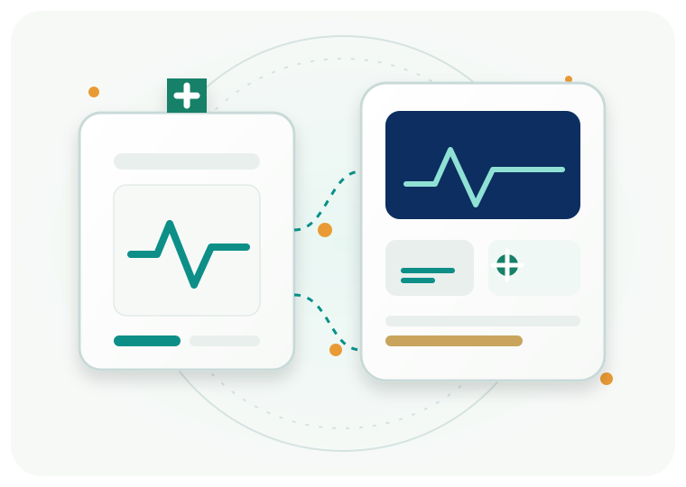
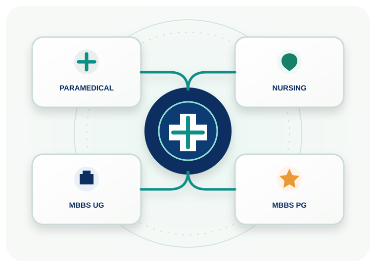
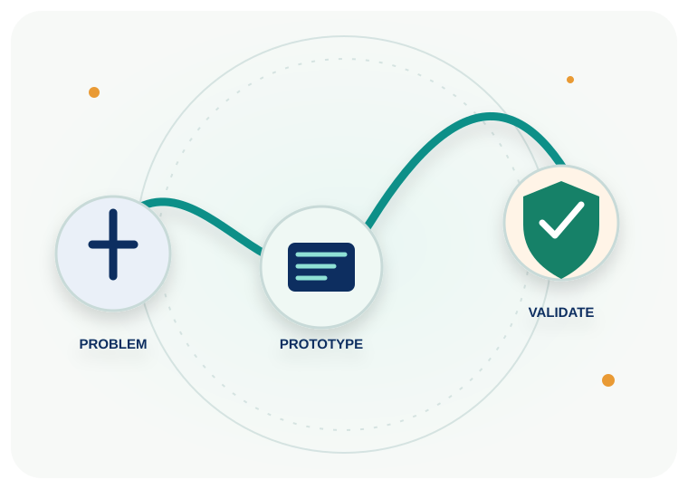
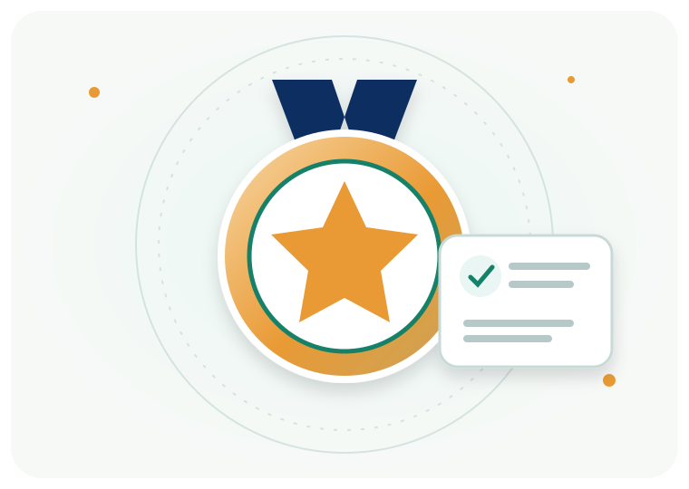

01
ALLIED HEALTHParamedical
Foundational knowledge across clinical laboratory sciences, diagnostics, infection control and patient safety.
Explore syllabus →One platform to demonstrate what you know, strengthen what you learn and take promising healthcare ideas closer to real-world impact.

Three registration categories. Four assessment pathways. MBBS candidates select their level before moving forward.

Foundational knowledge across clinical laboratory sciences, diagnostics, infection control and patient safety.
Explore syllabus →Nursing foundations, applied anatomy and physiology, nutrition, community health and professional practice.
Explore syllabus →Choose your academic level and enter a dedicated undergraduate or postgraduate practice pathway.
Choose UG or PG →Every practice paper connects back to the published subject map. Review topics, attempt sample MCQs, take a dedicated mock and identify where to focus next.
The QualiNova Healthcare Innovation Hackathon invites teams to develop ideas that address real needs in healthcare. Selected projects can progress through recognition, mentorship and a structured product-development support pathway.
Explore the Hackathon →

Academic recognition celebrates assessment performance. The Hackathon separately recognises selected ideas and teams, with a pathway to explore their development.
Keep the key preparation and submission dates in view.
Choose your registration category, understand your syllabus and begin preparing.